|
 |
 |
Puntos de
Inflexión Ecológica
- Cómo funcionan?
- Transformando círculos viciosos a círculos virtuosos
- Ingredientes para el éxito
- Elaboren sus propios Puntos de Inflexión Ecológica
Historias por Región
Historias por Tema
- Agricultura
- Agua y Cuencas
- Bosques
- Ecosistemas Urbanos
- Educación
- Energía
- Negocios
- Pesquerías
- Salud Pública
Videos Cortos
- Salvando un arrecife coral y una pesquería
(Filipinas) - Revitalizando vecindades urbanas con jardines comunitarios
(Nueva York) - Revirtiendo la deforestación tropical con bosques comunitarios
(Thailandia) - Rellenando aguas subterráneas con captación pluvial
(Rajastán, India) - Escapando la trampa de pesticidas
(India)
Explicando el Éxito
- Salvando un arrecife coral y una pesquería
(Filipinas) - Revitalizando vecindades urbanas con jardines comunitarios
(Nueva York) - Revirtiendo la deforestación tropical con bosques comunitarios
(Thailandia) - Rellenando aguas subterráneas con captación pluvial
(Rajastán, India) - Escapando la trampa de pesticidas
(India)

Ecología Humana: Presenta los principios de la ecología humana que sirven de fundamento a los Puntos de Inflexión Ecológica
EUA - California (Arcata) - Humedal Costero Artificial: Una Alternativa Rentable para Tratamiento de Aguas Residuales
- Breve: Al rechazar una costosa planta regional de tratamiento de aguas residuales, un pueblo transforma un parque industrial abandonado en una marisma que purifica las aguas residuales del municipio.
- Lea la historia detallada
- Fotos tomadas por Amanda Suutari - Todas las fotos están disponibles para descargarse gratis; favor de atribuir a la fotógrafa y al sitio de Internet.
- Pulse sobre la foto para ver los detalles.

Klopp Lake

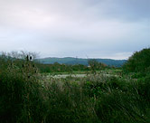
Marsh bank

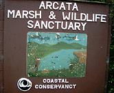
AMWS Sign

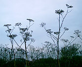
Queen Anne's Lace

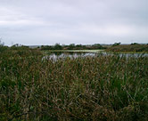
On a walking trail

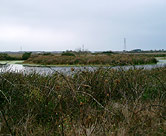
'Island' in marsh

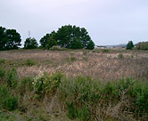
Former municipal landfill

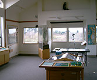
AMWS Interpretive Center

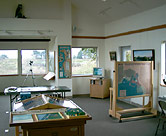
AMWS Interpretive Center

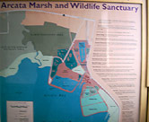
Aerial map of marsh

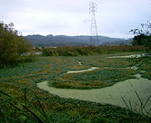
Hydrocotyl

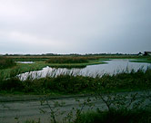
Visitor access road

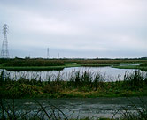
Visitor access road

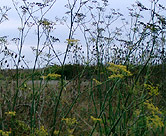
More marsh flora

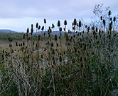
Thistles

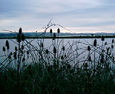
Humboldt Bay 'sunset'

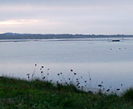
Overlooking Humboldt Bay

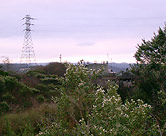
Primary treatment facility

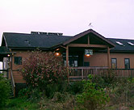
AMWS Interpretive Center

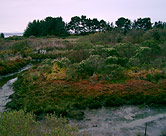
'Butcher's Slough'

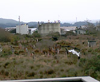
The headworks

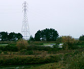
Overcast afternoon at AMWS

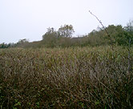
Dense marsh vegetation

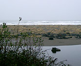
North of Arcata

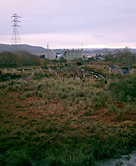
The headworks

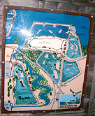
Aerial map of AMWS